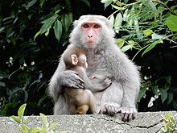

台灣獼猴

又稱烏肢猴
生活習性與出沒地點
生活習性
台灣獼猴屬於晝行性活動，為群居動物。 因其具有攻擊性，若前往其地盤觀光時須小心。 據說因為觀光客近年來喜歡投食給牠們，所以牠們的生活習性也被改變， 有些台灣獼猴甚至會入侵校舍以偷取食物。
出沒地點
陽明山、台北市天母水管路古道等。除了台灣四處可見之外，也有在日本出現。
覓食
與人類一樣是雜食性動物。 主要食用果實為主，有時也會食用昆蟲、甲殼或軟體動物。 除此之外，因為人類的投食，因此有的台灣獼猴也會食用一些人為加工食品。
身體特徵
四肢方面，前肢會比後肢來的短。 各肢都具有五指，頭圓臉扁但額頭露出。 臉面呈深紅或淡紅，臉頰長有長鬚、多毛。 全身毛皮夏季為棕綠色，冬季則為棕灰色。 四肢較黑、屁股之間有紅棕色的大班。 一般而言，雌猴體型會比雄猴小且毛色較淡。
回首頁